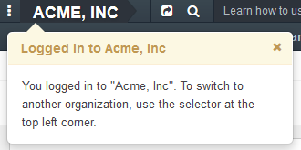
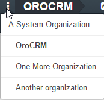
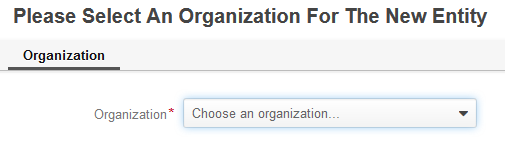

Each enterprise is structured in a meaningful way. Big enterprises usually have several branches/offices, each of which may be divided into several major divisions comprised of departments that may be comprised of several functional groups, etc. Even small companies organize their workforce into teams.
For example, a telecommunication service provider might have several subsidiaries, e.g. in each of the states. The Californian subsidiary may have two offices - Western and Eastern. In each of the offices there are unites working at different directions:
Each unit in its turn may be divided in teams, for example:
The corporate structure is essential, as it defines the scope of the user’s tasks and and available resources. As a business application, OroCommerce provides tools to reflect the corporate structure normally.
In OroCommerce, every business, division, or team of any kind may be represented by a business unit. The units can be hierarchically organized in a tree-like structure that reflects the actual subordination of the organization.
So, for example, to represent the hierarchy of the above-mentioned telecom in California, we need to create two business units that correspond to the two offices “Western California” and “Eastern California”. Each of them will have child business units that represent the directions: “Stationary Phones”, “Mobiles”, etc. Each of these child units, in its turn, will be a parent unit to other business units that correspond to the teams.
For example:
So, the system administrator usually creates such reflection of the organization’s hierarchy and defines what users belong to them. This affects the access and permissions granted to the users within the company.
For example, users assigned directly to the Eastern California business unit may see all the orders, requests and sales reported by any of the users of the unit and its child unit. Thus an office manager will see all the accounts created in any direction and by any kind of employee.
Users assigned to the child units may see only the accounts created within their unit - so, employees of the Stationary Phone department will only see the items reported by members of their department, and won’t see items reported by representatives of the Mobiles’ department.
In the same manner, the access may be limited for users assigned to the child-units of the next level, e.g. freelancer’s may only see the information that has been reported or assigned to them directly, and office employees will see information reported by any of their co-workers.
This will protect information on one hand, and help to protect users from being overwhelmed with non-relevant information.
Please refer to the Access and permissions section for more details.
Hint
By the user name, you can see the name of the business unit, that “owns” the user. This is also defined by the system administrator and serves as additional information for other users.
At least one business unit must be defined in the system.
In addition to the business unit hierarchy, OroCommerce Enterprise Edition provides the ability to create several Organizations. Organizations may be described as large business units, independent enough in their operations to require a high degree of separation and customization. Organizations provide a much higher degree of separation - every organization in OroCommerce is basically a business in its own right. They might have their own hierarchies of business units, use different languages and locales, or even the most common entities such as Contacts or Accounts may differ from one organization to another. Data records that exists in one organization are normally not available to another.
Usually, organizations are need when their real-world counterparts have their own P&L reports and balance sheets. For the telecom in the example above, different organization could represent offices in each of the states. Another good example for several organizations would be a franchisor that has several franchisees - the best way to represent each of them in OroCommerce is a separate organization. Even a freelance entrepreneur working with several different businesses from his computer will benefit using a separate organization to represent each of them in OroCommerce.
Subject to the work done in the company, some users may have access to several organizations (work with multiple organization) or to all records across all organizations that are available to them (work from a system organization). This is described below.
In many cases a user has access to a single organization. A sales representative in the U.S. office is likely to have no access to the company’s French division.
However, users can be assigned to multiple organizations just as they can be assigned to multiple business units and will get access to the records in different organizations. For example, if you are working at the worldwide help desk of a multinational organization, you should be able to access customer records in all the organization within your company in order to open cases based on the customer requests. Similarly, if you are the CEO of a big enterprise comprised of multiple independent divisions, you would like to have access to every one of them in order to check their performance.
As organizations are often much bigger and more separated than business units, the user will have to switch to the necessary organization to work with data in each one of them.
The name of an organization you are currently working with is displayed in the top left corner of the screen. If you have access to multiple organizations, upon your first login you will see a note with your current organization. Three dots to the left are the organization selector.
Click the selector, to see a list of organizations you have access to. Your current organization will be displayed in bold. If a System organization exists, it will be shown at the top of the list and shifted left.
To switch to another organization, click its name in the list.
A System Organization provides users with simultaneous access to all the records of all the organizations they are assigned to. There cannot be more than one system organization in OroCommerce.
When working in a system organization all grids will have an additional “Organization” column. The “Organization” field will be shown for each record viewed. The organization field is not editable.
When creating a record in a system organization, the user should select an organization to which the record will belong.
Note
A record can belong to the system organization as well — if this is the case, the record won’t be accessible from anywhere else other than the system organization itself. One example of such a record may be an aggregate report based on data from multiple organizations — it will make sense only within the system organization where all the necessary data is available.
Organizations and business units to which users belong will define the data available to them, and will mirror the company structure and related rules from the physical world to the software application.
Related Topics